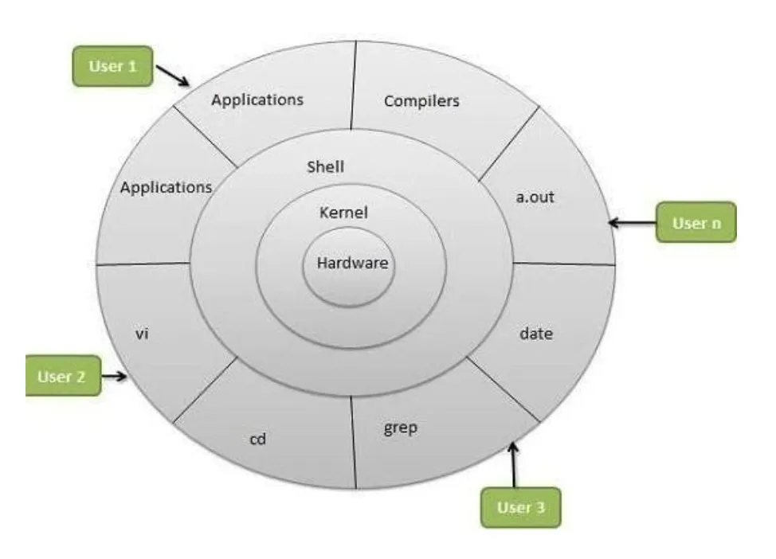
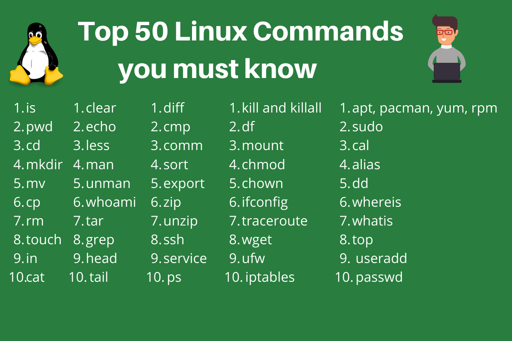

If you're new to Linux and feeling overwhelmed by the command line interface, don’t worry; you’re not alone! Linux commands may seem daunting at first, but once you get the hang of them, you’ll find that they’re incredibly powerful and efficient.
Linux organizes its file system in a hierarchical structure. Here are some important directories:
/root, /home/username/bin, /usr/bin, /usr/local/bin/sbin, /usr/sbin, /usr/local/sbin/media, /mnt/etc/tmp/boot/var, /srv/proc, /sys/lib, /usr/lib, /usr/local/libHere are some basic Linux commands that every beginner should know:
ls: List files and directoriescd: Change directoriespwd: Print the current working directorymkdir: Create a new directoryrmdir: Remove an empty directorytouch: Create a new empty filerm: Remove files or directoriescp: Copy files or directoriesmv: Move or rename files or directoriescat: Concatenate and display the contents of files
$ ls
$ cd Documents
$ pwd
$ mkdir my_directory
$ rmdir my_empty_directory
$ touch new_file.txt
$ rm old_file.txt
$ cp file.txt backup/file_backup.txt
$ mv file.txt Documents/file.txt
$ cat file.txt
Now that you have a basic understanding of some essential Linux commands, it's time to dive in and start exploring! Don't be afraid to experiment and make mistakes; that's how you'll learn the most.
For more in-depth tutorials and guides on Linux command line, check out these resources:
Linux comes in various distributions, each with its own unique features and target audience. Some popular Linux distributions include:
Choose a distribution based on your requirements and preferences.
